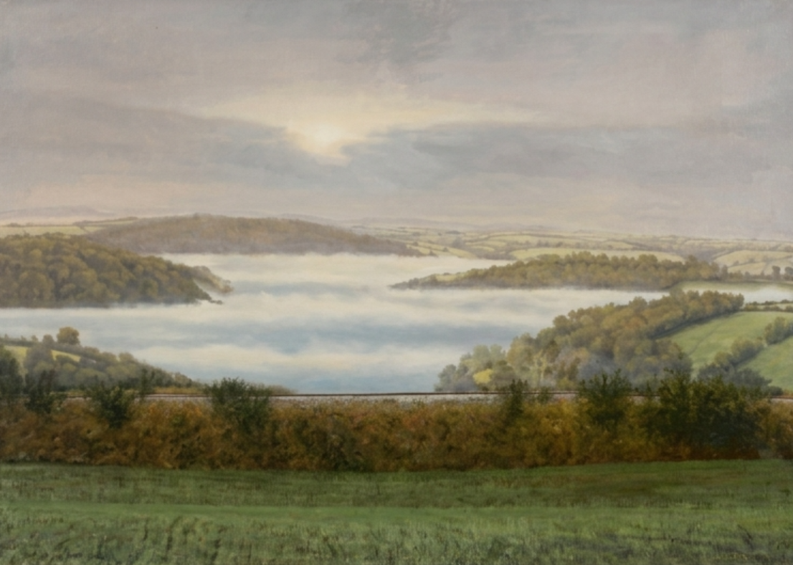

Morning Mist, Cornwall England
Oil on canvas
33" × 46"
$8,600
AMBLESIDE ARTIST
Oil · Portraiture · Landscape · Narrative Painting
FEATURED WORK

Peter Archer
THE ARTIST
Peter Archer worked in film publicity, book illustration, portrait commissions and art education before receiving his first major military commission in 1980.
That painting, The Charge of the Light Brigade, measured six by four feet and required the reconstruction of a historical scene through imagination, research and visual storytelling.
The commission led to further work for the British Army, where Archer painted historical and modern campaigns across a wide range of landscapes, uniforms, climates and periods.
Throughout his career, portraiture and observation remained central to his work, whether depicting military history, ceremonial occasions or everyday life.
NARRATIVE PAINTING
A moment that no camera could record.
COMMISSIONS
Archer's military work gave him the opportunity to compose scenes on an extraordinary scale: men and horses in motion, elaborate uniforms, architecture and environments ranging from snow and ice to tropical landscapes.
His subjects have included military campaigns in India, the two World Wars, the Falklands, Bosnia and the Gulf War.
Many of the historical events he depicted predated photography, requiring him to reconstruct action and atmosphere rather than simply reproduce an existing image.
He has also been commissioned to record ceremonial occasions involving the Queen and other members of the Royal Family.
INTERNATIONAL WORK
Archer's commissioned work has extended beyond Britain to include the Canadian Army, the Sultan of Oman and private clients.
Alongside his military paintings, he has continued to work across portraiture, landscape, seascape, architecture and animal subjects.
His work has been exhibited at the Royal Academy and in galleries throughout London, Suffolk, France and Amsterdam.
FRANCE
Since 1999, Archer has maintained a small gallery in Aubeterre-sur-Dronne, France.
There, his attention turns toward local activity: beach scenes, street musicians, open-air theatre and people relaxing in pavement cafés.
The shift in subject matter reveals the same underlying interest that runs through his military and portrait work — people, character and the drama of lived experience.
SELECTED WORKS
Oil on canvas
33" × 46"
$8,600
Oil on canvas
29" × 36"
$6,500
CAREER
Film publicity, book illustration and portrait commissions.
Taught art at the Middlesex College of Art and Design.
Received his first military commission, The Charge of the Light Brigade, measuring 6 × 4 ft.
Commissioned to paint historical and modern military campaigns.
Recorded ceremonial occasions involving the Queen and other members of the Royal Family.
Commissions for the Canadian Army, the Sultan of Oman and private clients.
EXHIBITIONS
Royal Academy · Hall Gallery · London · Woodbridge · Ipswich · Lavenham Galleries
Montluçon, France · Amsterdam, Netherlands
Gallery in Aubeterre-sur-Dronne, France.
COLLECT